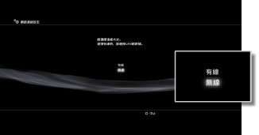
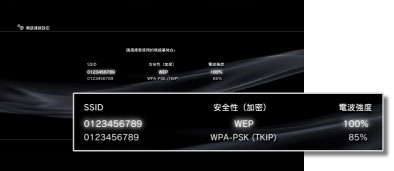
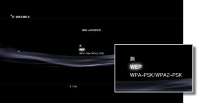
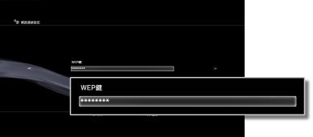

網路連線設定（無線）
此設定僅支援內建無線LAN機能的PS3™主機。
設定與網路間的連線方式。網路設定會因您使用之網路環境或裝置而異。以下僅說明與網路無線連線時的標準範例。
1. |
確認基地台的設定是否已完成。 |
|---|---|
2. |
確認PS3™是否已透過LAN連接線與網路連線。 |
3. |
選擇 |
4. |
選擇［網路連線設定］。 |
5. |
選擇［簡易］。
|
6. |
選擇［無線］。  |
7. |
選擇［掃描］。 |
8. |
選擇要使用的基地台。  |
9. |
確認基地台的SSID。 |
10. |
選擇要使用的加密設定。  |
11. |
輸入加密鍵。  結束加密鍵的輸入，並確認網路架構後，會顯示設定內容一覽。 |
12. |
保存設定。 |
13. |
進行連線測試。 |
14. |
確認連線結果。 |
 （設定）的
（設定）的 （網路設定）。
（網路設定）。
提示
- 連線失敗時，請遵循畫面指示，再度確認設定內容。同時亦請參閱網路服務商提供之資料和您使用之網路裝置隨附的使用說明書。
- 於步驟7選擇［自動］＞［AOSS™］後，若立刻進行連線測試，可能會出現路由器的設定未正確完成且連線失敗的情形。請先等候約1～2分鐘後再進行連線測試。